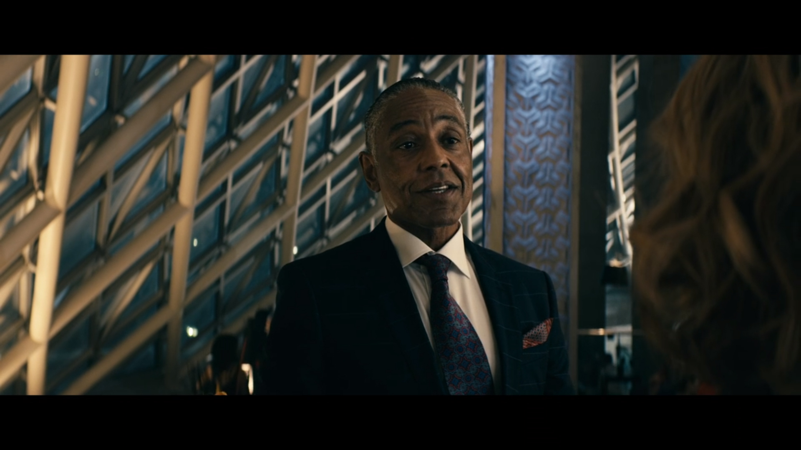
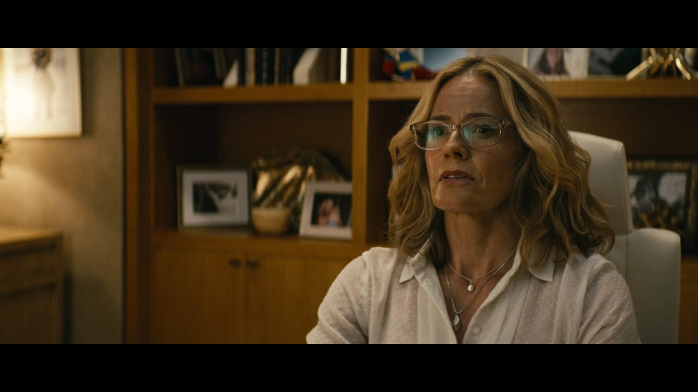
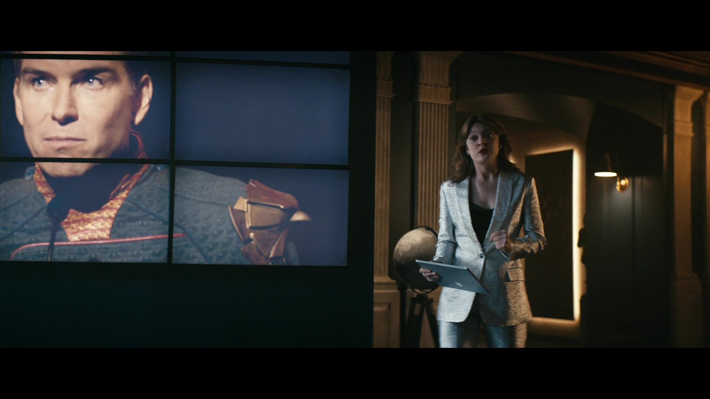
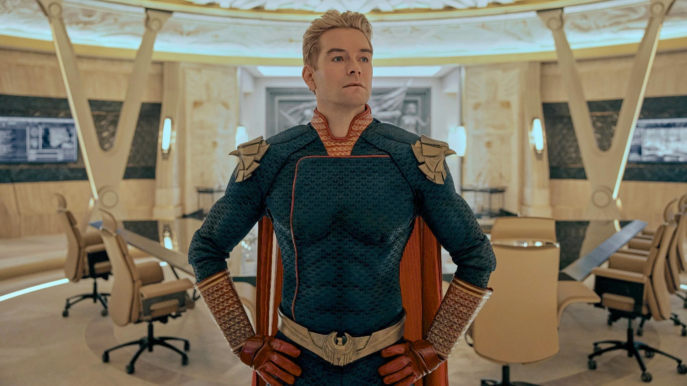
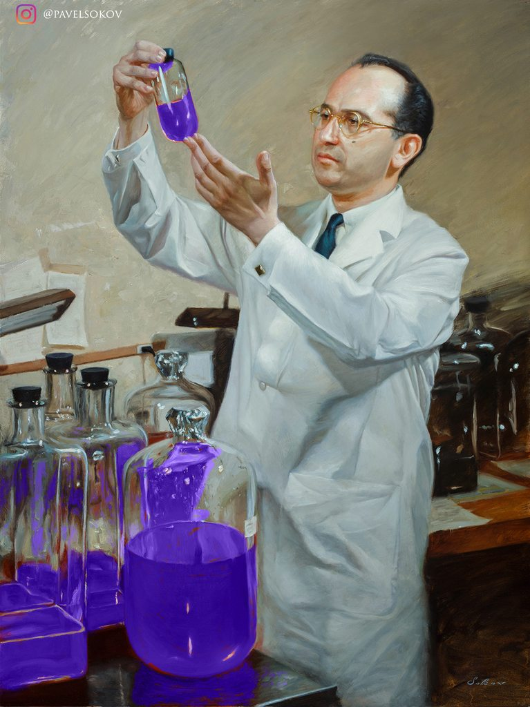
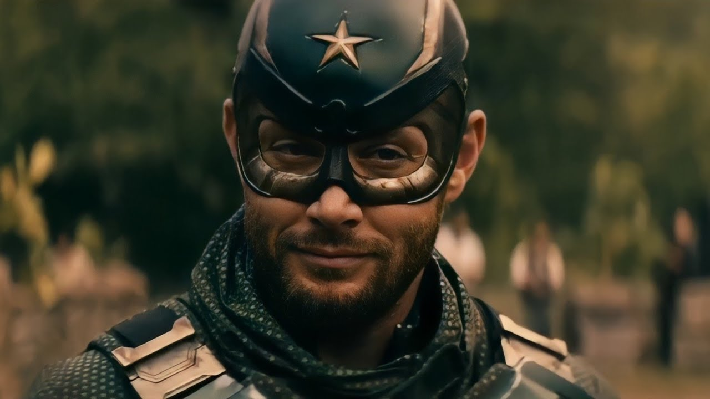

Stan Edgar
CEO
Stanford "Stan" Edgar is the overarching antagonist of the Amazon series
The Boys. He is the former CEO of Vought International and the superior of Madelyn Stillwell.
Although he initially keeps to himself while conducting business, he decides to take a more
direct approach in managing Vought and its assets, such as The Seven, following Stillwell's
death. He began his career as an associate for Vought American in 1984 and eventually rose up to
become the chief executive of the modern-day Vought International due to his calm, collected,
and ruthless personality. As one of the few people who shows no fear towards Homelander, Edgar
is the cool-headed puppet-master with a shadowy past; he pulled the strings that move Vought
forward, no matter the cost.

Madelyn Stillwell
Vice President
Madelyn Stillwell is a major antagonist in the Amazon series The Boys,
serving as the secondary antagonist of Season 1. She was one of the top-ranking executives
within Vought International, a media conglomerate that owns The Seven. As a result, she worked
closely with the Seven frequently. As Vought’s Senior Vice President of Hero Management, it was
Madelyn Stillwell’s job to manage the world’s greatest superhero team, The Seven. It was also
her job to ensure maximum power and profitability for the company – and that’s a job she
executes with ruthless efficiency. But her ambitions went beyond merely having superheroes
fighting crime on America’s streets; she desired to put them in the military, through a
multi-billion-dollar government contract.

Ashley Barrett
Former Director of Talent Relations
Ashley Barrett is a major antagonist in the Amazon series The Boys, serving
as a supporting antagonist in both Season 1 and Season 2, and a major antagonist in Season 3.
She is the CEO and former Director of Talent Relations for Vought International. After Madelyn
Stillwell's death, Ashley took over her position as the Senior Vice President of Hero
Management, though she held no authority over The Seven like her predecessor did. After Stan
Edgar's ousting from his position, Ashley went on to take over the role of CEO.

Homelander
Head of The Seven
Homelander is the leader of The Seven, one of the strongest Supes in the
world, and the archenemy of Billy Butcher, the leader of The Boys. With the face of a movie star
and the power of a god, Homelander is considered the greatest superhero alive. Not only can he
fly, but he also has super strength and super hearing, and he can see through almost anything
with his x-ray vision and then destroy it with his laser eyes. On the surface, he's affable,
modest, and sincere; the ultimate Boy Scout, an American treasure, a God-fearing patriot. But
just like mere mortals, even superheroes have secrets.

Frederick Vought
Inventor of Compound V
Doctor Frederick Vought was the inventor of Compound V, the husband of
Stormfront, and the founder of Vought-American, later known as Vought International. Before
defecting to America in the 1940s, he was a prominent geneticist in the Nazi Party. Despite the
fact that they betrayed the Nazis, Fredrick and his wife never lost their belief in the party's
ideology. As a result, the two of them eventually plotted to use Compound V to create an army of
superhumans and launch a global race war.

Soldier Boy
First Super Hero
Soldier Boy (real name Benjamin or Ben for short) is a major antagonist of
the Amazon series The Boys, serving as a mentioned character in Seasons 1 and 2, and one of the
two main antagonists (alongside Homelander) of Season 3. He was America's first and greatest
superhero before Homelander and the former leader of the superhero team Payback. As a young man,
Soldier Boy helped good triumph over evil in World War II. However, it is not made clear how
much of that is true, as The Legend claimed that his participation in the war was Vought
propaganda. With his superhero team Payback by his side, he was said to have fought for liberty
and justice for all until his disappearance during a botched military operation in Nicaragua,
with the cover story being that he heroically sacrificed his own life to save America from a
nuclear power plant meltdown in 1984.
 Introducing our Heroes
Introducing our Heroes